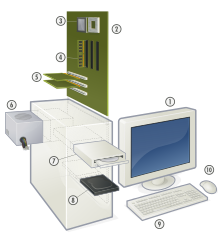

Computer Hardware
Computer Hardware includes the physical parts of a computer, such as the case, central processing unit (CPU), monitor, mouse, keyboard, computer data storage, graphics card, sound card, speakers and motherboard.
By contrast, software is the set of instructions that can be stored and run by hardware. Hardware is so-termed because it is "hard" or rigid with respect to changes, whereas software is "soft" because it is easy to change.
Hardware is typically directed by the software to execute any command or instruction. A combination of hardware and software forms a usable computing system, although other systems exist with only hardware.
There are a number of different types of computer system in use today such as:
Personal Computer:
The personal computer, also known as the PC, is one of the most common types of computer due to its versatility and relatively low price. Laptops are generally very similar, although may use lower-power or reduced size components.

Case:
The computer case is a plastic or metal enclosure that houses most of the components. Those found on desktop computers are usually small enough to fit under a desk, however in recent years more compact designs have become more common place, such as the all-in-one style designs from Apple, namely the iMac. Though a case can basically be big or small, what matters more is which form factor of motherboard it’s designed for. Laptops are computers that usually come in a clamshell form factor, again however in more recent years deviations from this form factor have started to emerge such as laptops that have a detachable screen that become tablet computers in their own right.
Power supply:
A power supply unit (PSU) converts alternating current (AC) electric power to low-voltage DC power for the internal components of the computer. Laptops are capable of running from a built-in battery, normally for a period of hours.
Mainboard:
The motherboard is the main component of a computer. It is a large rectangular board with integrated circuitry that connects the other parts of the computer including the CPU, the RAM, the disk drives(CD, DVD, hard disk, or any others) as well as any peripherals connected via the ports or the expansion slots.
Components directly attached to or part of the motherboard include:
- The CPU (Central Processing Unit) performs most of the calculations which enable a computer to function, and is sometimes referred to as the “brain” of the computer. It is usually cooled by a heat sink and fan. Most newer CPUs include an on-die Graphics Processing Unit (GPU).
- The Chipset, which includes the north bridge, mediates communication between the CPU and the other components of the system, including main memory.
- The Random-Access Memory (RAM) stores the code and data that are being actively accessed by the CPU.
- The Read-Only Memory (ROM) stores the BIOS that runs when the computer is powered on or otherwise begins execution, a process known as Bootstrapping, or “booting” or “booting up”. The BIOS (Basic Input Output System) includes boot firmware and power management firmware. Newer motherboards use Unified Extensible Firmware Interface (UEFI) instead of BIOS.
- Buses connect the CPU to various internal components and to expand cards for graphics and sound.
- The CMOS battery is also attached to the motherboard. This battery is the same as a watch battery or a battery for a remote to a car’s central locking system. Most batteries are CR2032, which powers the memory for date and time in the BIOS chip.
Expansion cards:
An expansion card in computing is a printed circuit board that can be inserted into an expansion slot of a computer motherboard or backplane to add functionality to a computer system via the expansion bus. Expansions cards can be used to obtain or expand on features not offered by the motherboard.
Storage devices:
Computer data storage, often called storage or memory, refers to computer components and recording media that retain digital data. Data storage is a core function and fundamental component of computers. The price of solid-state drives (SSD), which store data on flash memory, has dropped a lot in recent years, making them a better choice than ever to add to a computer to make booting up and accessing files faster.
- Fixed media
Data is stored by a computer using a variety of media. Hard disk drives are found in virtually all older computers, due to their high capacity and low cost, but solid-state drives are faster and more power efficient, although currently more expensive than hard drives, so are often found in more expensive computers. Some systems may use a disk array controller for greater performance or reliability.
- Removable media
To transfer data between computers, a USB flash drive or Optical disc may be used. Their usefulness depends on being readable by other systems; the majority of machines have an optical disk drive, and virtually all have a USB port.
Input and output peripherals:
Input and output devices are typically housed externally to the main computer chassis. The following are either standard or very common to many computer systems.
- Input
Input devices allow the user to enter information into the system, or control its operation. Most personal computers have a mouse and keyboard, but laptop systems typically use a touchpad instead of a mouse. Other input devices include webcams, microphones, joysticks, and image scanners.
- Output device
Output devices display information in a human readable form. Such devices could include printers, speakers, monitors or a Braille embosser.
Mainframe computer:
A mainframe computer is a much larger computer that typically fills a room and may cost many hundreds or thousands of times as much as a personal computer. They are designed to perform large numbers of calculations for governments and large enterprises.
Departmental computing:
In the 1960s and 1970s more and more departments started to use cheaper and dedicated systems for specific purposes like process control and laboratory automation.
Supercomputer:
A supercomputer is superficially similar to a mainframe, but is instead intended for extremely demanding computational tasks. As of November 2013, the fastest supercomputer in the world is the Tianhe-2, in Guangzhou, China.
The term supercomputer does not refer to a specific technology. Rather it indicates the fastest computers available at any given time. In mid 2011, the fastest supercomputers boasted speeds exceeding one petaflop, or 1000 trillion floating point operations per second. Super computers are fast but extremely costly so they are generally used by large organizations to execute computationally demanding tasks involving large data sets. Super computers typically run military and scientific applications. Although they cost millions of dollars, they are also being used for commercial applications where huge amounts of data must be analyzed. For example, large banks employ supercomputers to calculate the risks and returns of various investment strategies, and healthcare organizations use them to analyze giant databases of patient data to determine optimal treatments for various diseases and problems incurring to the country.
A video about computer hardware: